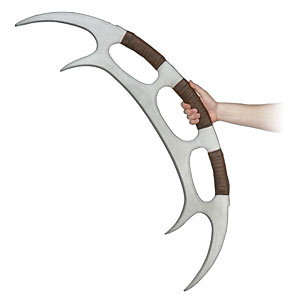
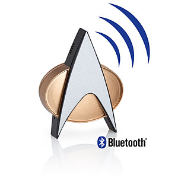
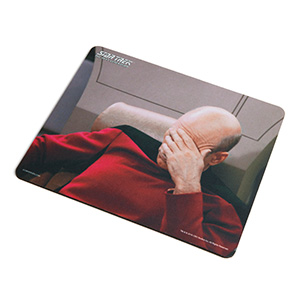
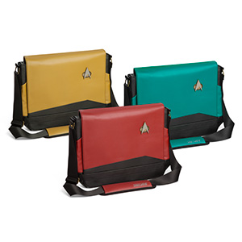
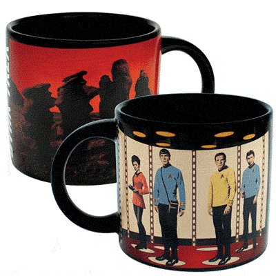
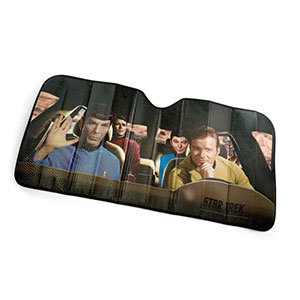

For those of us that prefer to see our objects to serve a pragmatic purpose, I present you with Star Trek accessories. Go bold, take them home.
|  |
Keep your co-workers or children at bay with this finely crafted foam Bat'leth. Intimidating and yet harmless,
and most certainly fun to spin about, this item will serve you well both at work and at home.
"Own the day." |
 | Be the epitomy of cool with a communicator badge. Bluetooth enabled for today, and configured to emit the classic communicator chirp. Good luck not making this thing chirp all day, because it is too cool for school. |  | Start your work day with Picard, and let his face-palm remind you that 20+ more occasions to do this will occur throughout the day but it will be okay. The high quality print is sure to make you smile every time it catches your eye. |
| Price: $59.99 | Price: $79.99 | Price: $19.99 | |||
|  | Stay organized like an officer of the fleet with this nifty messenger bag. It zips underneath the flap to keep your items safely in place and has tons of pockets, and has an adjustable strap. Will fit laptops and tablets smaller than 14 inches. |  | Who doesn't need this?! This coffee mug shows an empty teleporter pad until your favorite hot beverage is added, and then BLAM - there's that original crew we hold near and dear at the first whiff of coffee. I <3 this cup and you should too. |  | Whether you live in a state of brutal sunshine or not, this sunscreen is perfect for keeping your leather interiors protected and cool. Covering the entire windshield and showcasing the main crew of TOS in a shuttlecraft, this sunscreen is bound to make passerbys smile. |
| Price: $29.99 | Price: $12.99 | Price: $19.99 |